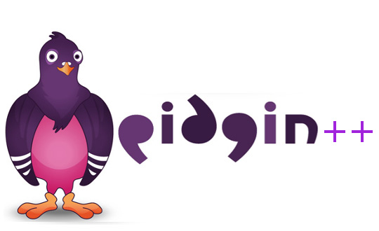

class: center, middle # Automatically Transplanting Software Functionality Wil Thomason --- # overview .big[ - What does it mean to transplant functionality? - Why would we want to do this? - What's done currently? - How can we go about this? ] --- # what? <table> <tr> <td> <img src="http://blog.desdelinux.net/wp-content/uploads/2014/01/pidgin.jpg" style="width:90%; float:left"/> </td> <td> </td> <td>  </td> --- <pre><code> void chat(int mode_val, char * message, ident * recipient) { switch(mode_val) { case UNENC_SINGLE: send_raw_message(message, recipient); break; case UNENC_MANY: while(recipient->next) { send_raw_message(message, recipient); recipient = recipient->next; } break; default: printf("No such mode!\n"); break; } } </code></pre> --- <pre><code> char * encode(char * buffer, int len) { char * ret = (char *)malloc(len * sizeof(char)); strcpy(ret, buffer); for(int i = 0; i < len; ++i) { ret[i] += 3; } return ret; } void send_encoded_message(char * message, ident * recipient) { char * enc_message = encode(message); send_raw_message(enc_message, recipient); } </code></pre> --- # why? - motivation .big[ - Software maintenance is a pain - Adding features is expensive - Plenty of potential for reuse ] --- # why? - current state of the art .big[ - Manual - Implement from scratch - Copypasta code ] <img src="http://cdn2.norecipes.com/wp-content/uploads/2012/10/spaghetti-recipe-5.jpg?c02f1c" style="float:right; width: 50%"/> --- # how? - general process .big[ - Necessary steps: - Localize - Extract - Retarget - Insert - Check - (Probably) Repeat ] --- # how? - localization .big[ - Genprog is good at localizing faults - Use test cases for functionality isolation - One suite for regression - One suite for localization - Problem: Common state ] --- # how? - targeting .big[ - Genprog can try mutants, but this might be slow - Ideas: - Automatic copypasta - ] --- # how? - translation .big[ - Variable renaming - Variable creation - When to create, and when to rename? - AST similarity - Conform to recipient's API - Resolve dependencies ] --- <pre><code> char * encode(char * buffer, int len) { char * ret = (char *)malloc(len * sizeof(char)); strcpy(ret, buffer); for(int i = 0; i < len; ++i) { ret[i] += 3; } return ret; } void send_encoded_message(char * message, ident * recipient) { char * enc_message = encode(message); send_raw_message(enc_message, recipient); } </code></pre> --- # who? <img src="https://rockhall.com/media/assets/inductees/default/the-who.jpg" style="width:60%; float:right"/> --- class: center, middle # questions?